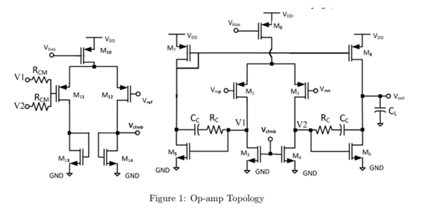
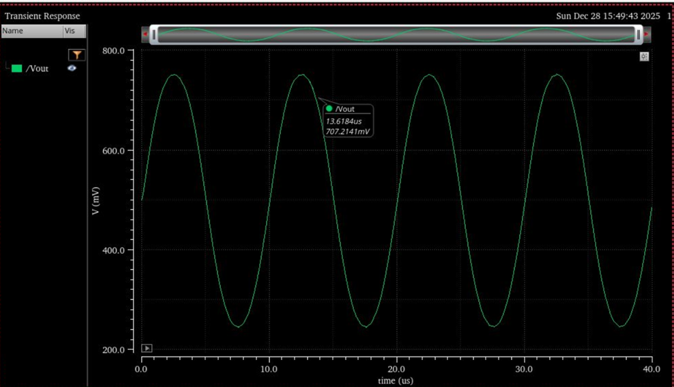
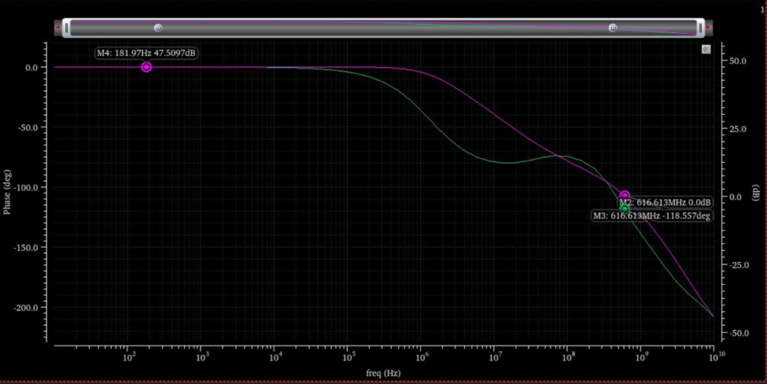
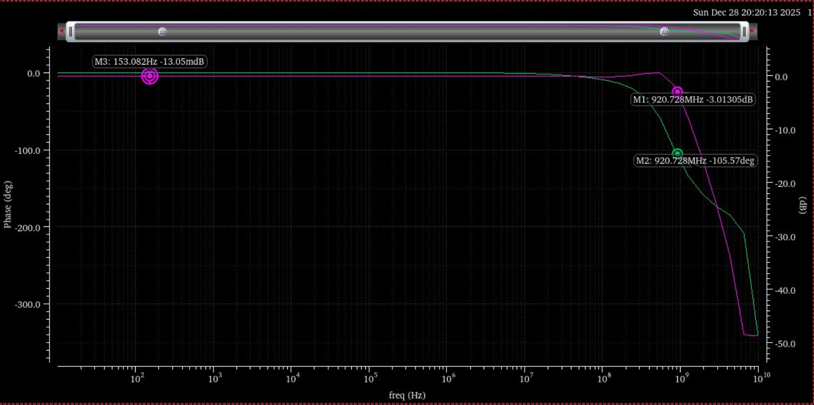
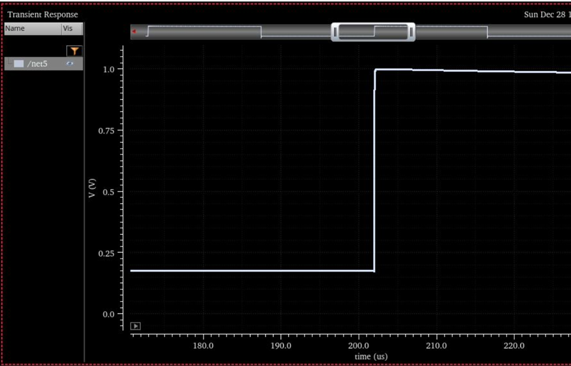

Overview
Designed and simulated a two-stage CMOS operational amplifier in a 45 nm process using Cadence Virtuoso. The design targets high open-loop gain, wide unity-gain bandwidth, and stable closed-loop operation. The amplifier consists of a fully differential first stage with common-mode feedback (CMFB), followed by a single-ended second stage.
Performance was validated using DC operating point analysis, open- and closed-loop frequency response, and large-signal transient simulations.
Overall Topology
The amplifier follows a two-stage topology. The fully differential first stage provides high gain and common-mode rejection. A dedicated CMFB loop regulates the output common-mode voltage. The second stage is a common-source amplifier that increases output swing and improves load driving capability.
This structure is widely used for high-speed, low-power operational amplifiers because it can achieve strong gain-bandwidth tradeoffs while remaining stable at unity gain with proper compensation.
Circuit Implementation
The complete transistor-level schematic was implemented in Cadence Virtuoso using low-voltage threshold devices. Device sizing and bias currents were chosen to meet small-signal targets (gain, bandwidth, and phase margin) while maintaining correct operating regions across the amplifier core and the CMFB network.
Biasing and DC Operating Points
DC operating point simulations were used to verify that transistors operate in the intended region and that the CMFB loop establishes the desired output common-mode level. Correct biasing is essential for predictable small-signal behavior and robust closed-loop stability.
Extracted small-signal parameters (e.g., transconductance and output resistance) were reviewed to confirm consistency with the intended operating point and to support hand-checks of gain and pole locations.
Small-Signal Frequency Response
Small-signal AC simulations were performed to evaluate open-loop gain, unity-gain bandwidth, and phase margin. The open-loop response confirms the gain roll-off and phase behavior, while the closed-loop configuration verifies stable unity-gain operation.
Open-Loop Gain and Phase:
Closed-Loop Frequency Response:
Achieved Performance
Summary of achieved performance from DC, AC, and transient simulations for the final tuned design.
| Parameter | Symbol | Achieved |
|---|---|---|
| Output Common-Mode | VCM | 0.4997 V |
| Total Power | P | 0.39641 mW |
| CMFB Power | PCMFB | 12.278 µW |
| Differential Output Swing | Vout,diff | 0.5 V |
| Low-Frequency Gain | A0 | 47.5097 dB |
| Unity-Gain Frequency | fu | 616.613 MHz |
| Phase Margin | PM | ≈ 61.143° |
| Slew Rate | SR | 28.79 V/µs |
Note: Values are reported from simulation results and depend on the testbench configuration (loading, feedback connection, input stimulus) and process assumptions.
Transient and Large-Signal Performance
Large-signal transient simulations were used to evaluate dynamic behavior including slew response and settling characteristics. The response indicates stable behavior without sustained oscillation when subjected to step-like inputs.
Summary
- Designed a two-stage CMOS operational amplifier in a 45 nm process
- Implemented a fully differential first stage with dedicated CMFB regulation
- Verified operating regions via DC analysis and extracted device parameters
- Demonstrated stable unity-gain operation with wide bandwidth and solid phase margin
- Validated large-signal behavior through transient simulation